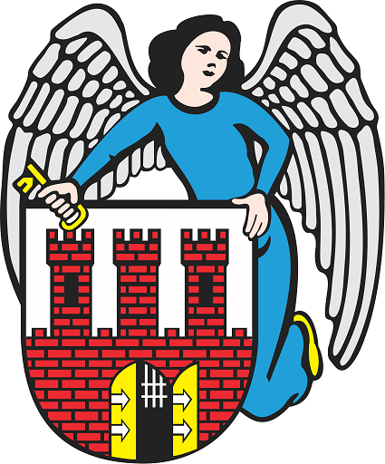

“Data ostatniej aktualizacji 20.10.2017 r. godzina 18.50”.
Data utworzenia strony 17.10.2017r
Organizator: Urząd Miasta Toruń 
Szczegółowy plan zebrania :
Uwagi:
Wycieczka - atrakcje turystyczne Torunia:
| 10:00-14:00 | Ogród Zoobotaniczy | Kamienica Pod Gwiazdą |
| 14:-20:00 | Motoarena | Krzywa Wieża |
| Zbiórka o godz.9:00 | ||
| Powrót o godz. 20.00 | ||
Konferencja rozpocznie się 20.12.2020 r. o godzinie 9 00
Zapisy trwają do końca września 2018 r.